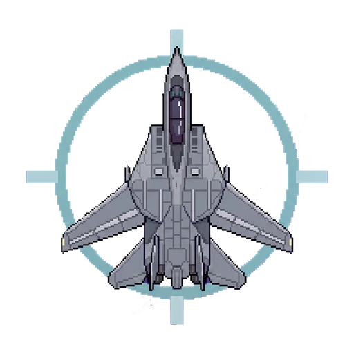

Crew Chief closes what fights DCS, starts what helps it, and puts everything back when you land.
Running DCS well isn't one program. It's a dozen, and most of them push themselves into your game whether you want them to or not.
Each one is useful on its own. The trouble starts when several of them draw on your game at once.
They all work the same way — they hook into the part of DCS that puts pixels on screen. One doing that is usually fine. Two or three fighting over it is where you get stutter, and it is a well-known cause of DCS crashing outright. In VR there is no spare headroom to absorb it, so you feel it immediately.
Step 1 is about making sure only the ones you actually want are hooked in when the game starts.
So you end up with a routine. Close these six. Start those three. Turn HDR off or the cockpit looks washed out, and remember to turn it back on. In the right order. Every time you fly.
Miss one step and you usually find out in the air.
Before anything is closed, the threat board shows every process it found and what it intends to do about it. Nothing happens that you were not told about, and nothing is terminated until you press launch.
A VR crash usually leaves you with nothing but a closed game and a shrug. Crew Chief is already watching, so the moment DCS writes a dump it builds a dossier: your rig, your driver, every overlay it suppressed for that flight, and the tail of the log — assembled while the evidence is still warm.
You get a single zip: the report in plain markdown, the log, the dump. Drag it into
whichever AI you use and ask what changed. No screenshots, no hunting through
Saved Games, no trying to remember which driver you were on last
Tuesday.
Close it mid-sortie, or lose power, and the next launch finishes the cleanup before it starts anything new. The state lives in a ledger on disk, not in the running process, so an abrupt end is a delay rather than a mess.
You don't have to notice this happened. That's the idea.
Crew Chief also ships a few known fixes for DCS in VR. Each one is a switch in Settings — they are options, not something that happens to you.
The F10 map stops loading a 3D hangar you never look at. DCS has drawn one behind the map every single time, for years. This swaps it for an empty scene, so the map opens faster and stops costing you frames for scenery nobody sees.
Menu and radio text you can actually read in a headset. DCS draws both small, and in VR it can be genuinely hard to make out. This bumps the sizes on the message panels and the radio menu.
Enter waypoints without leaning forward and pecking at a cockpit keypad. You get a window you can click, and it types the coordinates into the aircraft for you. Crew Chief keeps it updated for you.
Open it in-game with CtrlShiftSpace
A newer DLSS library than the one DCS ships with. Usually sharper in VR. Off by default — turn it on if you want it.
None of these touch core DCS files. They live in your Saved Games folder, where user mods are meant to go, and they are safe for multiplayer.
A normal Windows window showing a themed console. It shows you what's happening and sends your answers back down. Five colour schemes, light and dark. Under 2 MB.
Runs underneath the app as its own separate program. It finds what's running, closes it, puts it back, installs mods and applies your Nvidia settings. Keeping it separate means the screen in front can be redesigned without risking the part that touches your PC.
Every change is written to a file on your drive before it is made, and only crossed off once it is genuinely back. A program that remembers only in memory loses that memory when it dies; this one doesn't.
The extra files come separately. Mods, DLSS libraries and Nvidia profiles are their own download, fetched the first time you run it. That way the app can update often without pulling 50 MB along every time.
Every update is checked before it's installed. Crew Chief signs each release with its own key and won't apply anything that doesn't match — it deletes it instead.
No account, no telemetry, no launcher. Nothing phones home, and nothing sits in your tray asking for attention between flights.
Crew Chief started out solving one problem: stop background apps breaking VR. It's turned into a good place to put everything else that's fiddly about running a serious sim setup. The plumbing is already there, so adding something new means adding a step — not another tray icon and another settings file to remember.
Anything that currently lives in a text file and your memory. TrackIR, tracker calibration, button box profiles, per-aircraft Nvidia settings.
Next is reading the crash folder for you. It already keeps the log, your hardware and what was running — the step after that is known problems, mods that clash, "third time this month and it's always the same one".
Frame data next to what was running at the time. So "it stutters sometimes" becomes something you can point at.
A heavy VR campaign and a quick 2D session aren't the same setup. They shouldn't need the same list of apps closed.
The rule for all of it stays the same: it has to survive being interrupted. If a feature can leave your PC in a state you'd have to fix by hand, it isn't finished.
Windows, DCS World, VR or flat. No account, no telemetry, no launcher sitting in your tray asking for attention. Free, and it stays free.